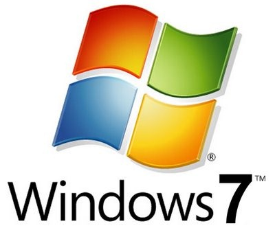

Hello world, first post. Anyways, I’m super excited for this mod, just because the fact that I haven’t been able to play it because Half-Life crashes for me at one point in the game every time!  Does anybody know a fix or what the cause is for this?
Does anybody know a fix or what the cause is for this?
Fix: Don’t use vista
/thread
Not everybody can change OS, anyway, have you tried reinstalling all of your goldsrc games?
No, but they should if they have Vista!
And OP, are you using Steam’s version, or an old CD version?
Upgrade your drivers, try to run the game in compatibility mode for Windows XP and in administrator mode.
If it still doesn’t work, call Bill Gates.
I have vista (though upgrading to Win7, woot!), and I was getting a lot of issues running Half-life, too.
One thing you might want to try is turning off Data Execution Prevention (DEP) for the game. Go into System - Advanced System Settings, then, in the advanced tab, click “settings” for “performance”. Go to the data execution prevention tab, and add C:\Program Files\Steam\steamapps\ACCOUNT NAME HERE\half-life\hl.exe to the list of exceptions.
It worked for me. Still, Vista is a pain in the ass with all these compatibility issues, that’s one of the reasons I’m upgrading.
The solution to all your problems:

I still get problems with gsrc games in Windows 7, HL1 and the expansions seem to crash when loading or game, or have infinite loading times when creating a new game.
Make sure you take ownership of your Steam folder, and run as administrator. Lots of problems are fixed by that.
Yeah… I do like Windows 7, and it is my OS of choice, but I can’t see how you can imply it solves ALL problems!
Really?
Steam Support told me to never start as an administrator.
Steam won’t even launch on my computer if I run as administrator.
I had the same problem back when I had XP, Half-Life and Blue Shift (but not OpForce for some reason) were always crashing. When I got a new computer (with windows 7) they ran fine. But now the problem is with HL: S, the save function wont work but it gives me all the chapters from the start.
Really? Well it works for other games 
It would work for the WON version of HL.
I just thought of something. You can set the game’s executable (hl1.exe or whatever) to run as administrator, without having to run Steam as such. Or would that give the same results?
It wouldn’t make any difference because steam doesn’t manually double click on it, it’s like using the command line.
It makes Steam report “This game is currently unavailable” on my computer.
Yes, I am using Steam’s version.
Did this a long time ago, didn’t do jack.
Same. OpForce will work up until the part where Gordon jumps into the teleporter, but I use the noclip backwards trick.
Still no help Oh well… Maybe I can use my XP and play?? 
Have you tried to bump down the resolution a bit (on the game or monitor or both) sometimes this helps. I have HL (not the source flavor) through steam and it wouldn’t let me play unless the monitor resolution was at 800x600! Also you might want to check if your antivirus or antimalware might be interfering. I had to change my antivirus once because it was interfering with a game I had on steam. Also the firewall may also be the culprit.